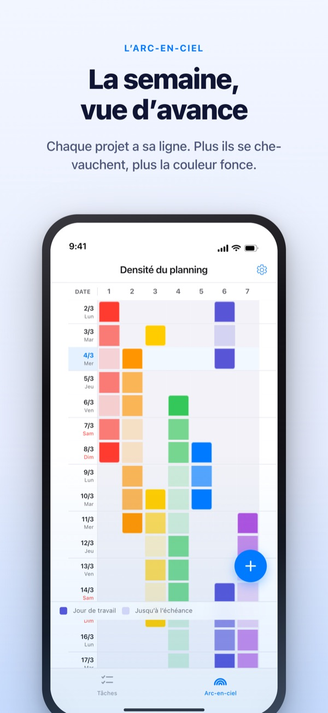
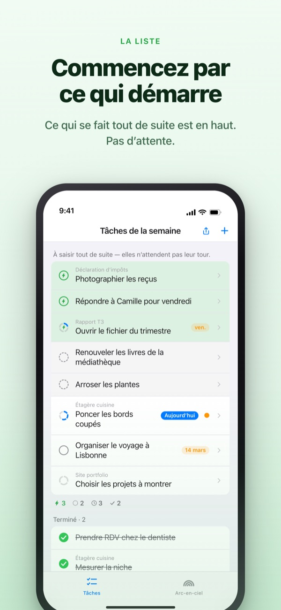
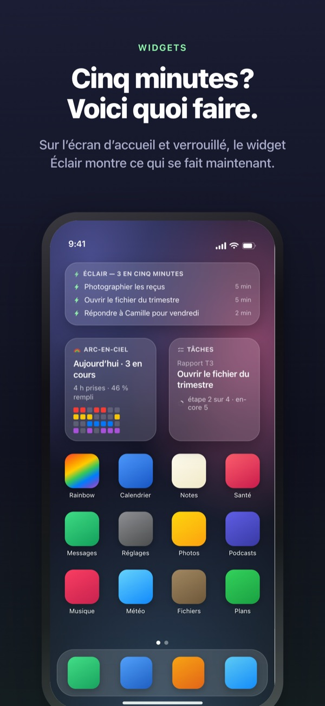

Voyez venir la semaine chargée.
Profitez des cinq minutes libres.
Plus vos tâches se chevauchent, plus l’arc-en-ciel fonce. Découpez un gros travail en étapes, et celle que vous pouvez faire dans un creux vous attend déjà en haut.
L’arc-en-ciel, le découpage des tâches, le minuteur et la synchronisation avec le Mac sont gratuits.

Essayez vous-même
« Rapport du T3 » est déjà découpé en cinq étapes. Choisissez-en une, changez sa durée ou inversez une réponse. Seule une étape qui obtient deux oui devient un fragment à faire en cinq minutes.
Un agenda qui a l’air vide, et pourtant une semaine à bout de souffle ?
Un agenda dit si quelque chose est prévu, pas combien de choses s’empilent par-dessus. Trois échéances dans la même semaine, on s’en rend compte une fois dedans, et les cinq minutes libres entre deux passent à relire la liste des tâches. Rainbow of Desire dessine votre semaine en grille, fonce là où ça se chevauche et met de côté les étapes qui tiennent dans un creux.
Deux questions suffisent
Quand vous découpez un gros travail, chaque étape reçoit deux questions. Pouvez-vous commencer sans temps de démarrage ? Est-ce terminé en cinq minutes ?
Seul un double oui en fait un fragment. L’app répond d’abord d’après la durée et vos mots, vous n’inversez une réponse que si elle est fausse.
Un creux ? Regardez tout en haut
Balayez une tâche vers la droite pour lui donner un éclair : elle passe devant tout le monde. Inutile de relire toute la liste.
Les étapes s’attendent-elles ? Vous le décidez une fois par groupe. Dans l’ordre montre la première étape non faite, Ordre libre le fragment que vous pouvez prendre maintenant.

Visible sans ouvrir l’app
Le minuteur compte jusqu’à la fin de l’événement, et le temps restant s’affiche aussi dans la Dynamic Island et sur l’écran verrouillé.
Les widgets d’écran d’accueil et verrouillé montrent ce que vous faites, ce qui tient en cinq minutes et l’arc-en-ciel de la semaine. (Widgets inclus dans Pro)

Trois étapes pour commencer
- 1
Tracez un événement
Maintenez une case vide le jour du début, touchez le jour de fin : une ligne apparaît sur l’arc-en-ciel.
- 2
Découpez les gros travaux
Touchez une tâche, notez ses étapes et choisissez une durée. L’app répond d’abord aux deux questions.
- 3
Dans un creux, regardez en haut
Les fragments et les tâches avec un éclair se regroupent en haut sans attendre leur tour.
Ce que vous verrez à l’écran
- Case foncée · case claire
- les jours où vous y travaillez vraiment, et le reste jusqu’à la date de fin
- Une ligne pleine
- un jour si chargé qu’un seul retard décale toute la journée
- Fragment
- oui aux deux questions ; à prendre quand cinq minutes se libèrent
- Courte plage de concentration
- pas de démarrage, mais pas fini dans un fragment ; se boucle d’une traite
- Plage de concentration
- demande un démarrage ou dure 45 minutes et plus ; à placer dans du temps réservé
- Éclair
- votre propre marque « tout de suite » ; passe en tête
- Dans l’ordre · Ordre libre
- si les étapes s’attendent, réglé une fois par groupe
- Registre du temps récupéré
- le bilan de la semaine : le reste à faire, le temps regagné et la récupération, tenus à part et jamais additionnés
Le temps s’additionne de bas en haut : la durée d’un travail est la somme de ses étapes.
Ce qu’il faut pour vivre aujourd’hui est gratuit
Gratuit
- L’arc-en-ciel (grille de densité du planning)
- Le découpage en étapes et les deux questions
- Éclair et ordre des étapes
- Minuteur dans la Dynamic Island et sur l’écran verrouillé
- Synchronisation avec Rainbow Craft sur Mac via iCloud
- Le registre des deux dernières semaines
Rainbow Plus · Rainbow Pro
- Plus : statistiques des événements et registre au-delà de deux semaines
- Pro : tout Plus, plus les widgets d’écran d’accueil et verrouillé
- Pro : importer depuis Calendrier et l’afficher en continu
- Pro : partager le planning, en lecture seule
- Pro : débloque aussi Rainbow Craft Pro sur Mac
Chacun en abonnement annuel ou en achat unique à vie
Vous ne payez que pour revenir sur les semaines passées et pour sortir des choses de l’app. Si vous avez acheté Pro avant ou gardez un abonnement mensuel, vous êtes toujours Pro.
Questions fréquentes
Faut-il un compte ou iCloud ?
Pas pour un usage seul. Aucune inscription, tout reste sur votre appareil. Pour un autre appareil, l’app Mac ou le partage, connectez-vous à iCloud.
L’app a mal répondu à une question.
Touchez l’étape et basculez entre Oui et Non. Votre réponse passe toujours avant celle de l’app. Touchez « Revenir à l’avis de l’app » pour la lui rendre. Une étape sans durée ne compte pas comme fragment, car l’app ne sait pas si elle tient en cinq minutes.
Puis-je partager avec quelqu’un ?
Avec un lien d’invitation, partagez votre planning en lecture seule (Pro), ou ouvrez une liste de tâches que vous et vos invités lisez et modifiez ensemble. Toute personne ayant le lien peut rejoindre, envoyez-le donc seulement aux bonnes personnes. Cela n’a rien à voir avec le Partage familial d’Apple.
Mes événements de Calendrier s’affichent-ils ?
Les événements des calendriers choisis apparaissent sur l’arc-en-ciel et dans la vue du jour (Pro). L’app les lit sans jamais rien y écrire.
Puis-je cocher depuis un widget ?
Les widgets servent uniquement à consulter. Touchez-en un pour ouvrir directement vos tâches et cochez là.
L’app Mac est-elle à acheter à part ?
Rainbow Craft est une app macOS distincte sur le Mac App Store. Avec le même compte iCloud, tâches et plannings de la semaine se synchronisent tout seuls, sans frais.
Mes anciennes tâches sont-elles conservées ?
Oui. Tâches, étapes et durées saisies restent en place. Les étiquettes des anciennes conditions de démarrage sont réévaluées par l’app avec les deux questions.
Où sont stockées mes données ?
Il n’y a pas de serveur. Tout reste sur votre appareil et dans votre iCloud personnel, hors de portée du développeur. Pas d’identifiant publicitaire, pas de localisation. L’app envoie seulement des statistiques d’usage anonymes, qui ne permettent pas de vous identifier et se désactivent dans Réglages.
Comment résilier un abonnement ?
Dans Réglages > Compte Apple > Abonnements. Sans résiliation au moins 24 heures avant la fin de la période, il est renouvelé au même prix. L’achat à vie se paie une seule fois.
Bloqué, ou quelque chose cloche ? Écrivez à leeo@kakao.com. Les réglages de l’app proposent aussi un moyen de nous contacter.